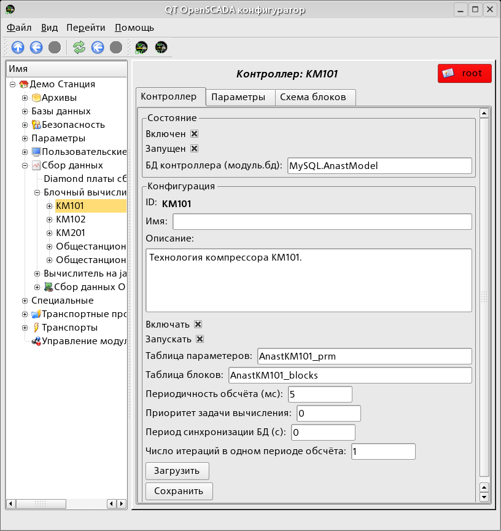
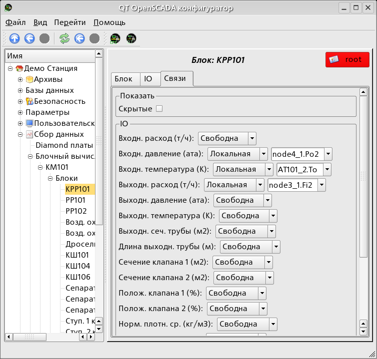

Модуль подсистемы «Контроллеры» BlockCalc предоставляет в систему
OpenSCADA механизм создания пользовательских вычислений. Механизм
вычислений основывается на формальном языке блочных схем.
Языки блочного программирования основываются на понятии блочных
схем. При чем, в зависимости от сущности блока, блочные
схемы могут быть: логическими схемами, схемами релейной логики, моделью
технологического процесса и другое. Суть блочной схемы состоит
в том, что она содержит список блоков и связи между ними.
С формальной точки зрения, блок это элемент, который имеет
входы, выходы и алгоритм вычисления. Исходя из концепции
среды программирования, блок это кадр значений ассоциированный
с объектом функции.
Разумеется, входы и выходы блоков нужно соединять
для получения цельной блочной схемы. Предусмотрены следующие типы
связей:
межблочные, подключение входа одного блока к выходу другого, а также входа одного блока к входу другого;
дальние межблочные, соединение блоков контроллеров данного модуля;
коэффициенты, преобразование входа в константу,
все входы/выходы по умолчанию инициализируются
как константы;
внешний атрибут параметра.
Условно, соединения блоков можно изобразить как связи между
блоками в целом (рис. 1) или детализация связей (рис. 2).
В процессе связывания параметров блоков допустимо соединение
параметров любого типа. При этом, в процессе вычисления будет
выполняться автоматическое приведение типов.
Рис. 1. Общие связи между блоками блочной схемы
Рис. 2. Детализированные связи между блоками
1 Контроллер модуля
Каждый контроллер этого модуля содержит блочную схему, которую
он обсчитывает с указанным периодом. Для предоставления
вычисленных данных в систему OpenSCADA, в контроллере могут
создаваться параметры. Пример вкладки конфигурации контроллера данного
типа изображен на рис.3.

Рис. 3. Вкладка конфигурации контроллера.
С помощью этой вкладки можно установить:
Состояние контроллера, а именно: «Включен», «Запущен» и имя БД содержащей конфигурацию.
Идентификатор, имя и описание контроллера(платы).
Состояние в которое переводить контроллер при загрузке: «Включен» и «Запущен».
Имена таблиц для хранения параметров и блоков контроллера.
Период, приоритет и число итераций в одном цикле задачи вычисления блочной схемы контроллера.
Период автоматической синхронизации блоков с БД.
Сохранить/загрузить контроллер в БД.
2 Блочная схема контроллера
Блочная схема формируется посредством вкладки блоков контроллера (Рис.4), конфигурации блока (Рис.5) и его связей (Рис.6).
Блоки блочной схемы могут связываться как между собой
так и подключаться к атрибутам параметров. Сами блоки,
при этом, не содержат структуры входов/выходов(IO),
а содержат значения исходя из структуры IO связанной
функции. Функции для связывания с блоком используются
из объектной модели системы OpenSCADA.
Любой блок может, в любой момент, быть исключён из обработки
и переконфигурирован, после чего может быть опять включен
в обработку. Связи между блоками могут конфигурироваться
без исключения блоков из обработки и остановки
контроллера. Значения всех IO не охваченных связями могут быть
изменены в процессе обработки.
Любой блок можно копировать для ускорения процесса формирования блочной схемы (Рис.4).
С помощью формы конфигурации блока можно установить:
Состояние контроллера, а именно: «Включен» и «Обрабатывается».
Идентификатор, имя и описание блока.
Состояние в которое переводить блок при загрузке: «Включен» и «Запущен».
Назначить рабочую функцию из объектной модели. Перейти к функции для ознакомления.
Сохранить/загрузить блок в БД.

Рис. 6. Вкладка конфигурации связей блока блочной схемы.
С помощью вкладки конфигурации связей блока блочной схемы можно установить связи для каждого параметра блока отдельно.
Поддерживаются следующие типы связей:
Межблочные. Подключение входа блока к выходу другого блока, а также входа одного блока к входу другого.
Дальние межблочные. Соединение блоков из различных контроллеров данного модуля.
Коэффициент. Превращение входа в константу. Все входы/выходы по умолчанию инициализируются как константы.
Внешний атрибут параметра.
Для установки значений параметров блока предназначена соответствующая вкладка (Рис.7).
В соответствии с реализацией пользовательских функций
в системе OpenSCADA поддерживаются четыре основных типа IO: целое,
вещественное, логическое и строка.
Модуль предоставляет только один тип параметров “Стандартный”.
Параметр служит для отражения вычисленных в блоках данных
на атрибуты параметров контроллера. Пример вкладки конфигурации
параметра приведен на Рис.8.
")
")